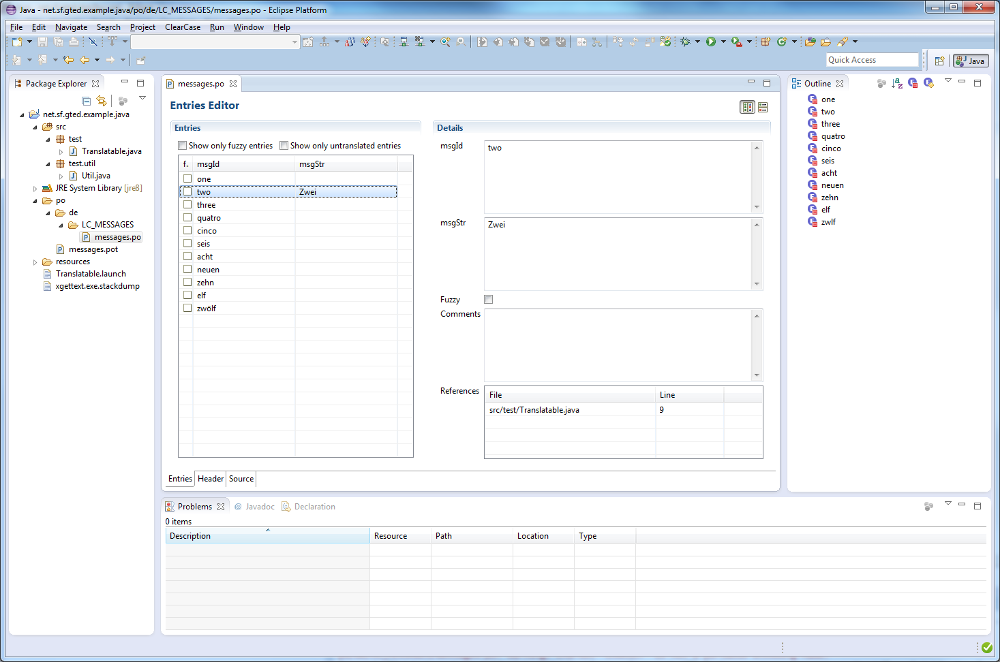
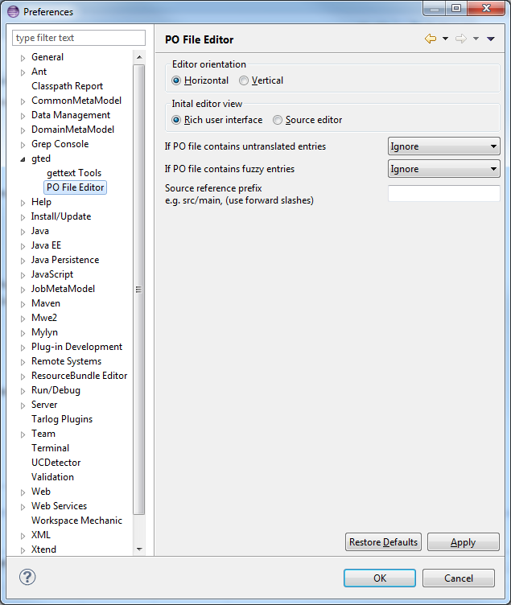

The po Editor provides a rich user interface and an enhanced source editor for editing gettext po files.
You can chose the orientation (horizontal as shown below or vertical) of the editor by clicking one of the buttons in the upper right corner.

You can set some preferences for the gted editor. Select from the Menu Window -> Preferences

You can choose between horizontal (default) or vertical orientation.
By default gted will display the rich user interface when opening a po file. With this option you can select to show the source editor as default.
You can specify the severity of the messages in problems view for untranslated and fuzzy entries.